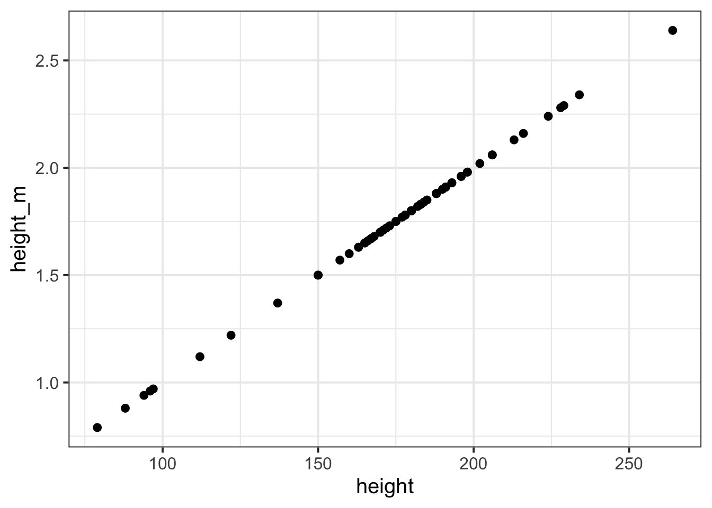
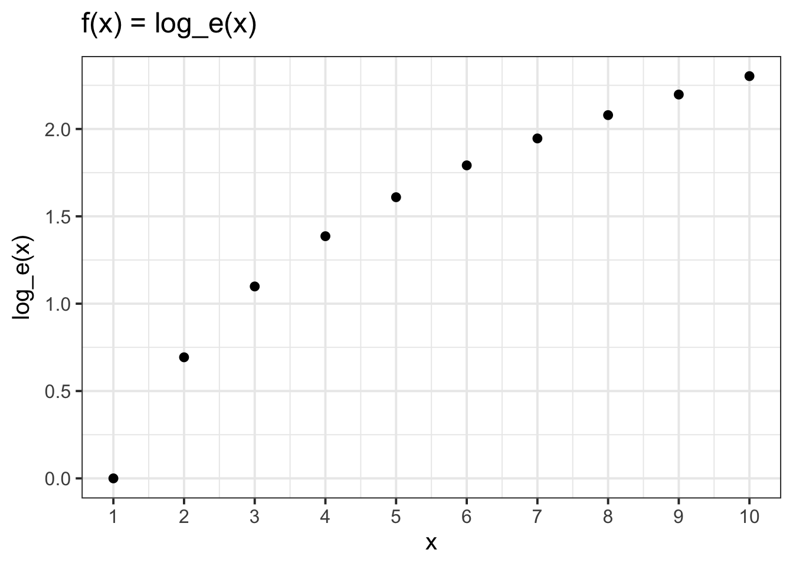

We have seen previously how we might change all the values in a variable, for instance if we want to turn heights from centimetres to metres:
# read in the starwars dataset and assign it the name "starwars2"starwars2 <-read_csv("https://uoepsy.github.io/data/starwars2.csv")# take the starwars2 dataframe |># mutate it such that there is a new variable called "height_m",# the values of which are equal to the "height" variable divided by 100.# then, select only the "height" and "height_m" columns (this is just # to make it easier to see without all the other variables)starwars2 |>mutate(height_m = height/100 ) |>select(height, height_m)
What we have done here, can be described as a transformation, in that we have applied a mathematical function to the values in the height variable.
Note
Transformation
Data transformation is when we apply a mathematical function to map each value of a variable to a specific transformed value. We transform for various reasons. For instance, we can use it to change the units we are interpreting (e.g., cm to m), or to change the shape of a distribution (e.g., make it less skewed).
We could even plot the heights in cm and heights in m against one another (note what units are on each axis):

Some transformations don’t result in a straight line between the input data and the output data. In this case, we say the transformation is “non-linear”. An example non-linear transformation is the log transformation.

A recap of logarithms and natural logarithms
Note
Logarithm
A logarithm (log) is the power to which a number must be raised in order to get some other number.
Take as examples \(10^2\) and \(10^3\):
A special case of the logarithm is referred to as the natural logarithm, and is denoted by \(ln\) or \(log_e\), where \(e = 2.718281828459...\)
\(e\) is a special number for which \(log_e(e) = 1\).
In R, this is just the log() function, which uses the base \(e\) by default.
# Natural logarithm of e is 1:log(2.718281828459, base =2.718281828459)
[1] 1
log(2.718281828459)
[1] 1
Centering and standardisation
Recall our Wechsler IQ dataset, in which we had data on 120 participants’ IQ scores (measured on the Wechsler Adult Intelligence Scale, WAIS), their ages, and their scores on two other tests. We know how to calculate the mean and standard deviation of the IQ scores:
# read in the datawechsler <-read_csv("https://uoepsy.github.io/data/wechsler.csv")# calculate the mean and sd of IQswechsler |>summarise(mean_iq =mean(iq),sd_iq =sd(iq) )
To mean-center in R, we can simply add a new variable using mutate() and subtract the mean IQ from the IQ variable:
# Take the "wechsler" dataframe, and mutate it,# such that there is a variable called "iq_meancenter" for which# the entries are equal to the "iq" variable entries minus the # mean of the "iq" variablewechsler |>mutate(iq_meancenter = iq -mean(iq) )
When we standardise a variable, we call the transformed values z-scores. To transform a given value \(x_i\) into a z-score, we simply calculate the distance from \(x_i\) to the mean, \(\bar{x}\), and divide this by the standard deviation, \(s\)
\[
z_i = \frac{x_i - \bar{x}}{s}
\]
So for each of the raw IQ scores, we can transform them to z-scores by subtracting the mean and then dividing by the standard deviation. The resulting values tell us how low/high each participant’s IQ score is compared to observed distribution of scores: \[
\textrm{raw IQ} = \begin{bmatrix} 71 \\ 103 \\ 74 \\ 108 \\ 118 \\ 129 \\ ... \end{bmatrix}, \qquad
\textrm{standardised IQ} = \begin{bmatrix} \frac{71-99.3}{15.43} \\ \frac{103-99.3}{15.43} \\ \frac{74-99.3}{15.43} \\ \frac{108-99.3}{15.43} \\ \frac{118-99.3}{15.43} \\ \frac{129-99.3}{15.43} \\ ... \end{bmatrix} = \begin{bmatrix} -1.84 \\ 0.238 \\ -1.64 \\ 0.562 \\ 1.21 \\ 1.92 \\ ... \end{bmatrix}
\]
We can achieve this in R either by manually performing the calculation:
# Take the "wechsler" dataframe, and mutate it,# such that there is a variable called "iq_z" for which# the entries are equal to the "iq" variable entries minus the mean of the "iq"# variable, divided by the standard deviation of the "iq" variable. wechsler |>mutate(iq_z = (iq -mean(iq)) /sd(iq) )
# Take the "wechsler" dataframe, and mutate it,# such that there is a variable called "iq_std" for which# the entries are equal to the scaled values of the "iq" variable. wechsler |>mutate(iq_std =scale(iq) )
We can also use the scale() function to mean-center a variable, by setting scale(variable, center = TRUE, scale = FALSE):
# create two new variables in the "wechsler" dataframe, one which is # mean centered iq, and one which is standardised iq:wechsler |>mutate(iq_mc =scale(iq, center =TRUE, scale =FALSE),iq_std =scale(iq, center =TRUE, scale =TRUE) # these are the default settings )
Many neuropsychological tests will have norms - parameters which describe the distribution of scores on the test in a normal population. For instance, in a normal adult population, scores on the WAIS have a mean of 100 and a standard deviation of 15. What this means is that rather than calculating a standardised score against the observed mean of our sample, we might calculate a standardised score against the test norms. In the formula for \(z\), we replace our sample mean\(\bar{x}\) with the population mean\(\mu\), and the sample standard deviation\(s\) with the population standard deviation\(\sigma\): \[
z = \frac{x - \mu}{\sigma}
\]
The resulting values tell us how low/high each participant’s IQ score is compared to the distribution of IQ scores in the population.
Glossary
Transformation: Applying a function to a variable to map each value to a transformed value.
Logarithm: The power to which a number must be raised in order to get some other number.
Centering: Transformation which re-expresses each value as the distance from a given number (e.g., the mean).
Standardisation: Transformation which re-expresses each value as the distance from the mean in units of standard deviations.
scale() To mean center or standardise a variable (depending upon whether center=TRUE/FALSE and scale=TRUE/FALSE).